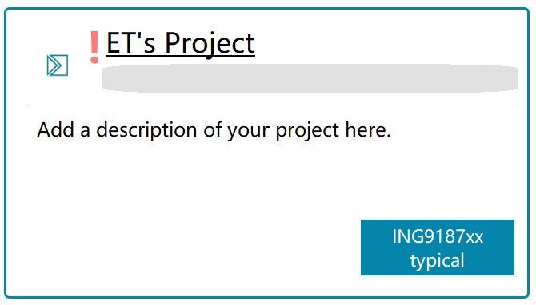
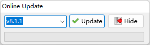
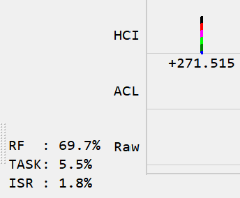
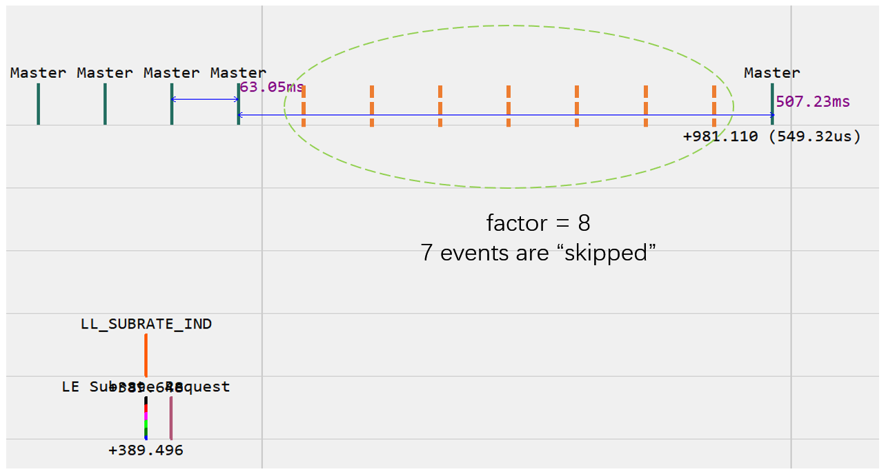
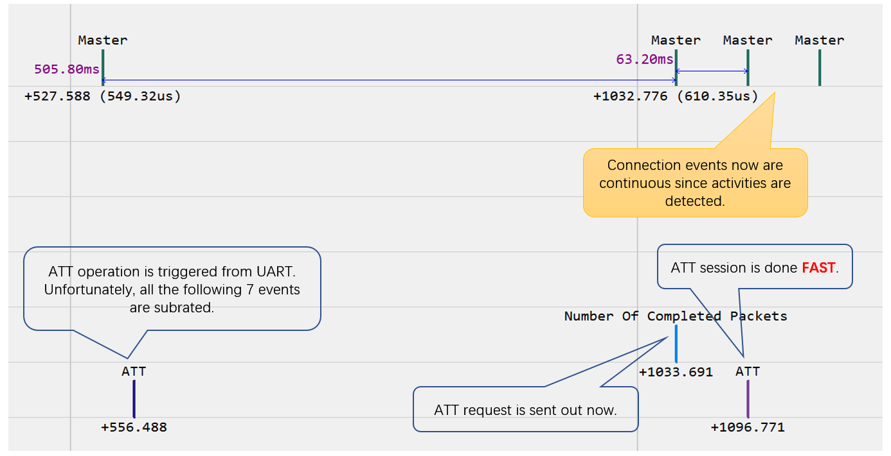

Highlights:
- 5.2 特性：路径损耗监测
- 5.3 特性：功率控制（5.2 Core Spec 有缺陷）
- 5.3 特性：减速（Subrating）模式
- SDK 自动升级
- 应用指南：蓝牙定位
- 低功耗蓝牙开发者手册
1. 软件包
-
[新增] ING918xx Experimental (
exp) 软件包 (8.1.0)为了保证软件包版本的稳定性，我们将这些新特性放到单独的实验性软件包里发布， 经过充分验证后再合并入其它软件包。
Experimental (
exp) 软件包同时包含私有扩展（(8.1.5)）。 -
[更新] 提高 CONNECT_IND 接收成功率 (8.1.1)
提升作为从设备被主设备连接时的成功率。
-
[更新] 所有 Nim 模块已移动到 Smart Home Hub 示例内 (8.1.2)
-
[修正] L2CAP 的几个问题 (8.1.3)
-
Central 角色不能正确响应 L2CAP_CONNECTION_PARAMETER_UPDATE_REQ
-
Peripheral 角色不会上报 L2CAP_EVENT_CONNECTION_PARAMETER_UPDATE_RESPONSE 事件
-
增加了一个新的事件 L2CAP_EVENT_COMMAND_REJECT_RESPONSE
以上事件的使用请参考 UART GATT Console。
-
-
[修正]
xxxx_request_can_send_now()潜在的递归调用问题 (8.1.4) -
[修正] typical 软件包里的一个 HardFault (8.1.6)
对于 ING916xx 的软件包，后续版本我们将考虑使用 Keil 5 编译。ING918xx 软件包仍将使用 Keil 4 编译。
-
[修正] ING916xx IR 中断未自动使能 (8.1.7)
-
[修正] v8.0.2 版本引入的 “JUST WORKS” 配对的问题 (8.1.7)
-
[修正] ING916xx IR 中断未自动使能 (8.1.7)
-
[修正]
btstack_event.h里的拼写错误 (8.1.7) -
[修正] 绑定后的重连问题 (8.1.8)
2. 库函数
- [更新]
gatt_client_util：实现了同步版本的 API (8.1.7)
详情参考开发者手册。
-
[修正] IR 驱动 peripheral_ir (8.1.7)
-
[更新] I2S, IR 驱动 (8.1.8)
3. 示例
-
[更新] UART GATT Console (8.1.0)
增加了几个相关命令用于演示 5.2/5.3 新特性。详细说明请参考“More Info”文档。
-
[更新] Peripheral Ccnsole (8.1.2)
增加
latency命令，用来主动为 Peripheral Latency 参数赋值。 -
[更新] UART GATT Console (8.1.3)
增加 L2CAP 的相关演示。
-
[更新] Nim Smart Home Hub 现在作为 Gnu Arm Toolchain 示例存在 (8.1.2)
-
[删除] Nim Peripheral Battery (8.1.2)
-
[更新] 若干示例的文档 (8.1.2)
-
[更新] Central CTE 增加 FOTA 功能 (8.1.6)
通过串口为天线板下载/更新程序比较麻烦，因此添加了 FOTA 功能。
-
[更新] LittlevGL: 加入对 ILI9488 的支持 (8.1.6)
整理了 LittlevGL 里的驱动程序，加入对 ILI9488 的支持。通过编译开关设置显示屏类型:
编译开关（宏） 说明 取值范围 默认值 SPI_LCD_DRIVER 驱动芯片名称 LCD_DRIVER_ST7735, LCD_DRIVER_ST7789, LCD_DRIVER_ILI9488 LCD_DRIVER_ST7735 LCD_WIDTH 显示屏水平分辨率 整数 128 LCD_HEIGHT 显示屏垂直分辨率 整数 160 在下列显示屏模块上做过测试：
-
[更新] UART GATT Console (8.1.7)
演示了 GATT 客户端同步版 API 的用法。
-
[修正] Voice Remote Control: I2S DMA 不工作的问题 (8.1.8)
-
[修正] UART GATT Console: 不发起配对的问题 (8.1.a)
4. 工具
-
[更新] Tracer: 5.3 消息解析 (8.1.0)
-
[更新] Wizard 对那些不是 SDK 内置但是位于 examples 目录的工程作出提醒 (8.1.0)
我们不建议将开发的新项目/工程存放于 examples 目录。现在当 Wizard 检测到这样的 项目时会加上一个醒目的标志，如下图所示：

-
[更新] Windows 安装包支持静默安装 (8.1.1)
对于通常情况的 SDK 版本升级，带上
/silent参数运行安装包，只需要点击一次鼠标就可以完成升级。ingchips_sdk_setup_v8.1.1.exe /silent当开发工具发生变化（比如更新了 Keil、Gnu 工具链）时，可以再用普通模式安装。
-
[更新] Wizard：移除了对 Nim 语言的支持 (8.1.2)
-
[更新] Wizard：添加在线更新功能 (8.1.2)
当 Wizard 检测到新 SDK 版本时，会弹出 Online Update 窗口，点击 Update 按钮可直接完成升级。 Online Update 窗口里的版本号可以修改，不但可以自动升级，而且可以降级。

禁用此功能： 如果开发者认为自动检查更新功能带来了不便，必须禁用此功能，那么可以在 ING_SDK\wizard\data 目录下创建一个名为 NO_UPDATE （无扩展名）的空白文件，然后重启 Wizard。 -
[修正] AoX 工具：命令行解析、去掉无关的
printf(8.1.2) -
[更新] Trace：增加当前帧(5 秒) RF、协议栈负载统计功能 (8.1.3)
下图中， RF 负载为 69.7%，就是说 RF 部分 69.7% 的时间里一直在工作；TASK 负载为 5.5%，就是说协议栈的两个任务共占用 5.5% 的 MCU 处理时间； ISR 负载为 1.8%，就是说中断处理程序共占用 1.8% 的 MCU 处理时间。

这个统计功能可以辅助分析问题，例如：
-
RF 负载较低导致扫描到的广播较少：需要检查扫描参数是否合适；
-
协议栈负载过高导致系统不流畅：需要检查代码是否可以优化；
-
中断负载过高导致系统不流畅：需要将复杂处理转移到 RTOS 的任务里。
说明： 用于 log 可以会丢失，所以以上统计数据可能偏小。一部分 ISR 负载可能被再次统计到 TASK 负载里。 -
-
[更新] Wizard 的代码生成：Keil 启动文件兼容 MicroLib 及标准 Lib (8.1.6)
现在 Wizard 为生成的启动文件兼容 MicroLib 及标准 Lib，方便开发者使用标准 Lib、C++ 语言。
-
[修正] Wizard 为 IAR 生成项目时的问题 (8.1.a)
5. 文档
-
[新增] 应用指南：蓝牙定位 (8.1.4)
-
[新增] 低功耗蓝牙开发者手册 (8.1.7)
6. 新特性解析
路径损耗监测
BLE 5.2 为路径损耗定义了 3 种分类（或者分区，zone），高损耗、中损耗和低损耗。Controller 监控损耗情况，当损耗分类发生改变时，上报 HCI_SUBEVENT_LE_PATH_LOSS_THRESHOLD 事件。 开发者可以响应这些事件，比如调整发射功率。
各分区的门限通过 API gap_set_path_loss_reporting_param 指定。
功率控制
对于本机的发射功率，SDK 已经提供了链路层 API ll_set_conn_tx_power。现在，
链路层新增了可以调整对端发射功率的 API ll_adjust_conn_peer_tx_power。
联合上述两种功能以及 gap_read_rssi，开发者可以设计合适的功率自动控制方案。
UART GATT Console 里演示里一种简单的自动控制方案。
减速（Subrating）模式
试想，当主或从设备没有待发送的数据时，是否有办法节省功耗？ 答案是肯定的：1) 更新为较大的连接间隔；2) 跳过一部分连接事件。
对于外围设备（从设备），这种 跳过 功能，就是 perirpheral latency (slave latency）。 中心设备（主设备）可以 跳过 吗？如果 perirpheral latency 为 0， 中心设备也是可以 跳过 的。 但是如果中心设备和外围设备都 跳过 就有问题：跳过的节奏不一致，通信中断。
减速（Subrating）模式其实就是为中心设备和外围设备定义了一种统一的节奏，保证通信的持续性。


减速模式与调整连接间隔相比，灵活敏捷，反应迅速，优势明显。 减速模式和功率控制一起，在保证服务质量的前提下，可以明显降低连接状态下功耗。